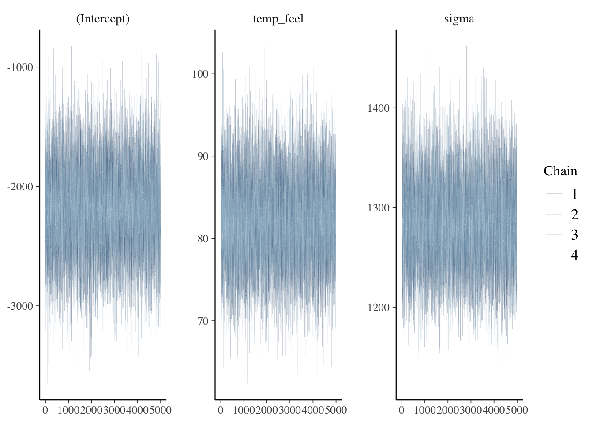
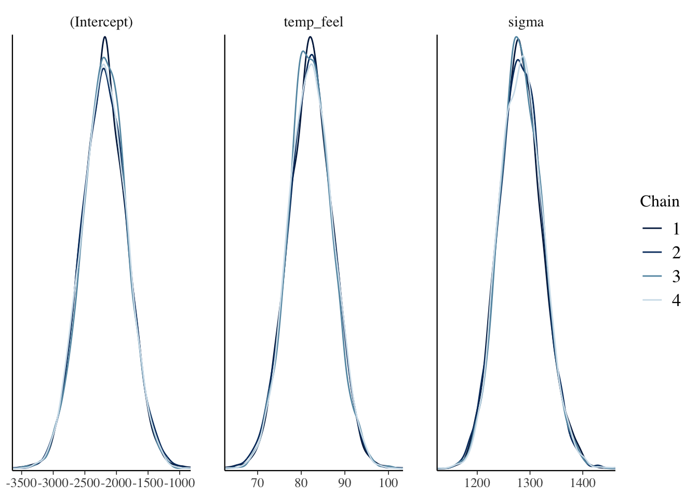

08- Bayesian Linear Regression Code Demo
R implementation
Show/Hide
data(bikes)Show/Hide
bike_model <- rstanarm::stan_glm(rides ~ temp_feel, data = bikes,
family = gaussian,
prior_intercept = normal(5000, 1000),
prior = normal(100, 40),
prior_aux = exponential(0.0008),
chains = 4, iter = 5000*2, seed = 2025)
SAMPLING FOR MODEL 'continuous' NOW (CHAIN 1).
Chain 1:
Chain 1: Gradient evaluation took 0.000667 seconds
Chain 1: 1000 transitions using 10 leapfrog steps per transition would take 6.67 seconds.
Chain 1: Adjust your expectations accordingly!
Chain 1:
Chain 1:
Chain 1: Iteration: 1 / 10000 [ 0%] (Warmup)
Chain 1: Iteration: 1000 / 10000 [ 10%] (Warmup)
Chain 1: Iteration: 2000 / 10000 [ 20%] (Warmup)
Chain 1: Iteration: 3000 / 10000 [ 30%] (Warmup)
Chain 1: Iteration: 4000 / 10000 [ 40%] (Warmup)
Chain 1: Iteration: 5000 / 10000 [ 50%] (Warmup)
Chain 1: Iteration: 5001 / 10000 [ 50%] (Sampling)
Chain 1: Iteration: 6000 / 10000 [ 60%] (Sampling)
Chain 1: Iteration: 7000 / 10000 [ 70%] (Sampling)
Chain 1: Iteration: 8000 / 10000 [ 80%] (Sampling)
Chain 1: Iteration: 9000 / 10000 [ 90%] (Sampling)
Chain 1: Iteration: 10000 / 10000 [100%] (Sampling)
Chain 1:
Chain 1: Elapsed Time: 0.187 seconds (Warm-up)
Chain 1: 0.201 seconds (Sampling)
Chain 1: 0.388 seconds (Total)
Chain 1:
SAMPLING FOR MODEL 'continuous' NOW (CHAIN 2).
Chain 2:
Chain 2: Gradient evaluation took 9e-06 seconds
Chain 2: 1000 transitions using 10 leapfrog steps per transition would take 0.09 seconds.
Chain 2: Adjust your expectations accordingly!
Chain 2:
Chain 2:
Chain 2: Iteration: 1 / 10000 [ 0%] (Warmup)
Chain 2: Iteration: 1000 / 10000 [ 10%] (Warmup)
Chain 2: Iteration: 2000 / 10000 [ 20%] (Warmup)
Chain 2: Iteration: 3000 / 10000 [ 30%] (Warmup)
Chain 2: Iteration: 4000 / 10000 [ 40%] (Warmup)
Chain 2: Iteration: 5000 / 10000 [ 50%] (Warmup)
Chain 2: Iteration: 5001 / 10000 [ 50%] (Sampling)
Chain 2: Iteration: 6000 / 10000 [ 60%] (Sampling)
Chain 2: Iteration: 7000 / 10000 [ 70%] (Sampling)
Chain 2: Iteration: 8000 / 10000 [ 80%] (Sampling)
Chain 2: Iteration: 9000 / 10000 [ 90%] (Sampling)
Chain 2: Iteration: 10000 / 10000 [100%] (Sampling)
Chain 2:
Chain 2: Elapsed Time: 0.182 seconds (Warm-up)
Chain 2: 0.206 seconds (Sampling)
Chain 2: 0.388 seconds (Total)
Chain 2:
SAMPLING FOR MODEL 'continuous' NOW (CHAIN 3).
Chain 3:
Chain 3: Gradient evaluation took 8e-06 seconds
Chain 3: 1000 transitions using 10 leapfrog steps per transition would take 0.08 seconds.
Chain 3: Adjust your expectations accordingly!
Chain 3:
Chain 3:
Chain 3: Iteration: 1 / 10000 [ 0%] (Warmup)
Chain 3: Iteration: 1000 / 10000 [ 10%] (Warmup)
Chain 3: Iteration: 2000 / 10000 [ 20%] (Warmup)
Chain 3: Iteration: 3000 / 10000 [ 30%] (Warmup)
Chain 3: Iteration: 4000 / 10000 [ 40%] (Warmup)
Chain 3: Iteration: 5000 / 10000 [ 50%] (Warmup)
Chain 3: Iteration: 5001 / 10000 [ 50%] (Sampling)
Chain 3: Iteration: 6000 / 10000 [ 60%] (Sampling)
Chain 3: Iteration: 7000 / 10000 [ 70%] (Sampling)
Chain 3: Iteration: 8000 / 10000 [ 80%] (Sampling)
Chain 3: Iteration: 9000 / 10000 [ 90%] (Sampling)
Chain 3: Iteration: 10000 / 10000 [100%] (Sampling)
Chain 3:
Chain 3: Elapsed Time: 0.109 seconds (Warm-up)
Chain 3: 0.213 seconds (Sampling)
Chain 3: 0.322 seconds (Total)
Chain 3:
SAMPLING FOR MODEL 'continuous' NOW (CHAIN 4).
Chain 4:
Chain 4: Gradient evaluation took 1.5e-05 seconds
Chain 4: 1000 transitions using 10 leapfrog steps per transition would take 0.15 seconds.
Chain 4: Adjust your expectations accordingly!
Chain 4:
Chain 4:
Chain 4: Iteration: 1 / 10000 [ 0%] (Warmup)
Chain 4: Iteration: 1000 / 10000 [ 10%] (Warmup)
Chain 4: Iteration: 2000 / 10000 [ 20%] (Warmup)
Chain 4: Iteration: 3000 / 10000 [ 30%] (Warmup)
Chain 4: Iteration: 4000 / 10000 [ 40%] (Warmup)
Chain 4: Iteration: 5000 / 10000 [ 50%] (Warmup)
Chain 4: Iteration: 5001 / 10000 [ 50%] (Sampling)
Chain 4: Iteration: 6000 / 10000 [ 60%] (Sampling)
Chain 4: Iteration: 7000 / 10000 [ 70%] (Sampling)
Chain 4: Iteration: 8000 / 10000 [ 80%] (Sampling)
Chain 4: Iteration: 9000 / 10000 [ 90%] (Sampling)
Chain 4: Iteration: 10000 / 10000 [100%] (Sampling)
Chain 4:
Chain 4: Elapsed Time: 0.136 seconds (Warm-up)
Chain 4: 0.211 seconds (Sampling)
Chain 4: 0.347 seconds (Total)
Chain 4: Show/Hide
bayesplot::mcmc_trace(bike_model, size = 0.1)
Show/Hide
bayesplot::mcmc_dens_overlay(bike_model)
Show/Hide
bayesplot::neff_ratio(bike_model)(Intercept) temp_feel sigma
0.99465 0.99180 0.95030 Show/Hide
bayesplot::rhat(bike_model)(Intercept) temp_feel sigma
1.0000752 1.0000909 0.9999646 # A tibble: 4 × 5
term estimate std.error conf.low conf.high
<chr> <dbl> <dbl> <dbl> <dbl>
1 (Intercept) -2191. 355. -2653. -1735.
2 temp_feel 82.1 5.07 75.7 88.7
3 sigma 1282. 41.1 1231. 1336.
4 mean_PPD 3487. 80.3 3385. 3590. Python implementation
Check PyMC demo
Error occurs when rendering the quarto file. But it can be run in a Python script.
Show/Hide
import pymc as pm
import numpy as np
import pandas as pd
import arviz as az
import xarray as xrShow/Hide
# Load your dataset
bikes = pd.read_csv("../data/bikes.csv")
# Assuming `rides` is the target variable and `temp_feel` is the predictor
rides = bikes["rides"].values
temp_feel = bikes["temp_feel"].valuesShow/Hide
import pymc as pm
# Define the Bayesian model
with pm.Model() as bike_model:
# Priors
intercept = pm.Normal("intercept", mu=5000, sigma=1000)
slope = pm.Normal("slope", mu=100, sigma=40)
# sigma = pm.Exponential("sigma", lam=0.0008)
sigma = pm.HalfCauchy("sigma", beta=10)
# Linear model
mu = intercept + slope * temp_feel
# Likelihood
likelihood = pm.Normal("rides", mu=mu, sigma=sigma, observed=rides)
# Sampling
draws = pm.sample(5000, tune=5000, chains=4, random_seed=2025)
# pm.summary(draws)Show/Hide
pm.summary(draws)Show/Hide
az.plot_trace(draws)Show/Hide
trace.posterior["y_model"] = trace.posterior["Intercept"] + trace.posterior["x"] * xr.DataArray(x)Show/Hide
_, ax = plt.subplots(figsize=(7, 7))
az.plot_lm(trace=trace, y="y", num_samples=100, axes=ax, y_model="y_model")
ax.set_title("Posterior predictive regression lines")
ax.set_xlabel("x");